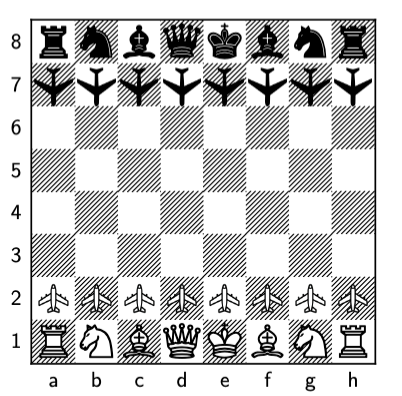

I've done some background study of NeRFs and their method for view synthesis.
I've so far finsihed understanding several reseach papers, It's actually not that complex as it feels like.
I'm currently trying to run Tensor Core Implementation and trying to profile individual kernel performances required in the entire pipeline.
My goal is spot some key bottlenecks in this pipeline and try to optimise the corresponding kernels.
Research Papers Read :
1. 3D Gaussian Splatting for Real-Time Radiance Field Rendering [link]
2. TC-GS: A Faster Gaussian Splatting Module Utilizing Tensor Cores [link]
3. CLM: Removing the GPU Memory Barrier for 3D Gaussian Splatting [link]
I only had access to consumer grade GPU (RTX 2080 Ti), and thus it was difficult to run 3DGS model. Thus I read about CLM(similar to zero-offload), which just needs 1 consumer grade GPU and it works by offloading Gaussians to CPU and just load gaussians when necessary. There are various issues with the naive approach, paper discusses in detail on the design and various optimizations in this methodology. I really enjoyed reading this paper.

I built my own chess engine from scratch as a fun project. The engine used a bitmap-based board representation to enable fast move generation and board evaluation through bitwise operations. While bitboards made many things elegant and efficient, handling chess-specific rules like castling, en passant, and sliding-piece move generation made it a bit inconvenient to use bitboards.
Beyond the core board representation and evaluation logic, the main focus of this project was game-tree search. I implemented minimax, alpha-beta pruning, and an optimized parallel version of alpha-beta using Principal Variation Search (PVS). Although alpha-beta is fundamentally sequential due to left-to-right dependencies, PVS allowed meaningful parallelism by first exploring the leftmost branch sequentially to establish tight alpha-beta bounds, and then searching the remaining branches in parallel using these bounds. This significantly improved pruning effectiveness while still exploiting multicore parallelism.
The engine was implemented in MaPLe, a Standard ML-based functional language designed for provably efficient and safe multicore parallelism. Parallelism was expressed using high-level primitives such as reduce, which we used to combine results from parallel alpha-beta searches in a stable and deterministic way. In addition to PVS, I also implemented semi-parallel and fully parallel minimax variants to compare performance trade-offs.
We experimented with parallelizing move generation as well, but found that for chess, especially for sliding pieces like rooks, bishops, and queens, move generation was inherently sequential and offered limited parallel benefit relative to scheduling overhead. Instead, performance gains primarily came from search optimizations such as lazy game-tree generation, where successor states were generated only when required rather than eagerly expanding the entire subtree.
Sequential alpha-beta consistently outperformed parallel minimax, while parallel PVS outperformed both, especially as the number of processors increased. There was still significant room for improvement, particularly in move ordering, which had a major impact on pruning efficiency. Improving this heuristic, along with experimenting with variations such as searching multiple principal branches instead of just one, was identified as the next step in pushing performance further.